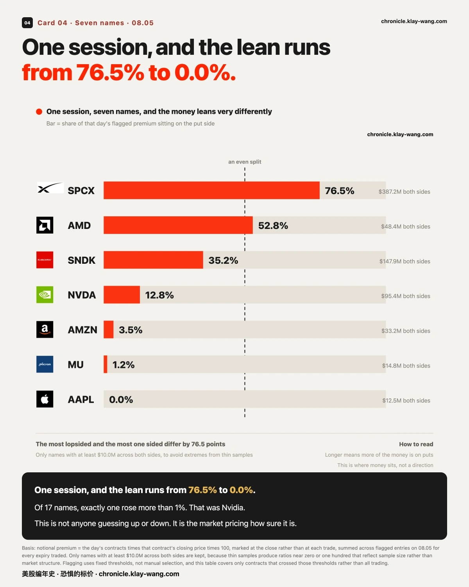
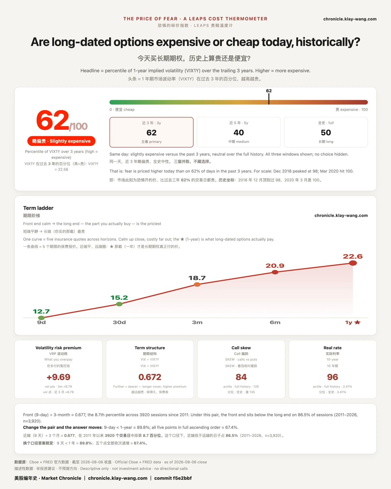

闪迪财报交卷，尾盘居然这么多看涨？· 08-05
SPCX 08.06 迎来上市后第一批解禁。08.05 它的异常成交里 76.5% 的权利金落在看跌一侧，08.05 最大的五笔全部是 08.07 到期的看跌，而这个到期日正好跨过解禁那天。
谷歌 08.05 的 78 根五分钟里，中午 12:00 起的三根合计 927 万股、占全天 27%，最重那根是之前两小时均量的 22 倍，十五分钟跌 5.08%；而同一天，它的期权只有 147 万美元跨过异常线。跌发生在股票上，没有发生在期权上。
交卷前最后半小时，看涨是看跌的 5.5 倍

闪迪 08.05 盘后交卷。把 08.07 到期、1400 这一档 08.05 的成交按每 30 分钟拆开，
两侧的节奏完全不同。
看跌是一整天匀速摊开的。 开盘后两小时 1240 张，午后一度冷到每半小时只有五十来张，
14:00 之后合计 754 张。没有哪一刻是决断的。
看涨是两头重的。 早盘前三根 1902 张，中午同样冷下去，
而收盘前最后半小时一根就是 1189 张，是它全天最大的一根。
同一个时段的看跌只有 215 张。两边差 5.5 倍。
这个差距还是保守的：两侧逐笔可测的量分别是看涨 4951 张、看跌 2705 张，
而收盘全量是 6477 和 3378，缺的部分都集中在收盘前那几分钟。
换句话说，尾盘那根只会比图上更高，不会更低。
两侧对各自的未平仓量都是倍数：看涨 6477 张对 1684 张未平仓（3.8 倍），
看跌 3378 张对 578 张（5.8 倍）。都是 08.05 新开的居多，不是旧仓在换手。
未平仓量隔夜才结算，08.06 开盘就能验。
这两条分布的形状，比任何一个合计数都说明问题。 看跌是全天摊开的，
看涨则在开盘和收盘前各来一段，而收盘前那一段，正好撞在财报公布之前的最后半小时上。
形状本身就是这一天的判断：这批钱不是被某一条消息叫出来的，是被那个时点叫出来的。
正股 08.05 收 1350.50，跌 5.40%。
开奖：当季交出的是超预期，市场卖的是下一季
08.05 盘后交卷的结果，两半是分开的。
已经发生的那一半，超得很多。 当季营收 89.65 亿美元，同比增长 371.6%，高于市场共识的
87.13 亿；非美国通用会计准则口径的每股收益 39.25 美元，高于共识的 35.45 美元，超出约 11%；
毛利率 84.6%，也在共识的 83.6% 之上。
还没发生的那一半，低了。 下一季的营收指引中值 105.5 亿美元，比共识的 111.48 亿低 5.4%；
毛利率指引中值 84.0%，比共识的 86.7% 低约 267 个基点。每股收益指引中值 45.00 美元，
与共识的 45.34 大体相当。
盘后报价一度到 1248，比 08.05 收盘低约 7.6%（这是盘后时段的报价，成交远薄于正式时段，
不是收盘价，与上面那个 1350.50 不同源、不同口径）。
把这两半和图上那件事放在一起看，节目的形状就出来了。 白天过线的三档全是看涨，
而收盘前最后半小时那 1189 张看涨，全都赶在结果公布之前上桌。
财报里真正被卖的不是当季那张成绩单，是下一季的那张。
提前上桌的那些钱有没有比别人更早知道指引，成交记录不显示。能确定的只有先后：钱先动，结果后到。
至于结果公布之后市场怎么定价，08.06 开盘才算数。
顺带一条会传导的
这份指引低于预期，对整个存储板块的情绪都有影响，而不只是这一家。
08.05 美光收 893.19，几乎没动（+0.06%）；它在盘中一度涨过 3%，收盘全数吐回。
这批指引是它收盘之后才公布的 ⇒ 08.06 是它第一个能对这件事定价的交易日。已入回访清单。
解禁前一天，七成六的钱压在同一侧

08.06 开盘，SPCX 会多出九亿多股可以卖的股票。这是它上市以来第一次解禁，首批约占两成，
按近期价算大概 1230 亿美元。马斯克本人那六十多亿股不在这一批里，要锁到 2027 年 6 月。
这种事的日期是提前几个月就写在文件里的，所有人都知道它会来。08.05 是它到来之前的最后一个交易日。
这一天，SPCX 的异常成交里有 2.96 亿美元落在看跌一侧、9093 万美元落在看涨一侧，看跌占 76.5%。
换成不受价格影响的张数来算是 55.4%，两个数一起看更准确：按价值算压得很偏，按张数算也过半。
08.05 最大的五笔全部是 08.07 到期的看跌，而这个到期日正好跨过解禁那一天。最大的一档是 110 看跌，
7003 万美元、117508 张。
一天前的 08.04，同一只票的两侧还几乎是对开的。从对开变成七三开，只用了一个交易日。
正股 08.05 收 108.27，跌 13.61%，距上市以来最高点回撤 52.02%。
值得记一笔的是，市场为这只票开的价并没有开错。08.04 收盘时给它的三日区间是 101.80 到 135.97，
上下约 14.33%。08.05 它日内最低 106.66、最高 117.50，全天都在这个区间里面。
跌了 13.61% 这件事，08.04 就已经被算进价钱里了。
解禁本身不改变一家公司值多少钱，它只改变有多少人可以在同一天改变主意。
但它把一个具体日期变成了一个所有人都盯着的时点，而这个到期日的价，就是市场为跨过那个时点开的价。
市场开的价，差一块一毛六

08.04 收盘之前，有人把一句关于 AMD 的话写了下来：它在 08.05 会落在 483.21 和 555.21 之间。
写下这句话的不是哪位分析师，是整条期权链的报价。它对应一倍标准差，也就是说，
按当时的定价，一天之内大约三分之二的可能会落在这个范围里。这个数字 08.04 就冻结了，事后改不了。
08.05 开盘，AMD 报 484.50，落在下沿之内 1.29 美元。收盘 482.05，落在下沿之外 1.16 美元。
一天之内，它两次擦着同一条线走，一次在里面，一次在外面。全天跌 7.04%，而那条线画在 6.93%。
落在外面不等于这个价开错了。一倍标准差自己的定义里就留了大约三分之一的时间会被走出去。
真正有信息的是差多少：1.16 美元，是整个区间宽度 72 美元的百分之一点六。
换句话说，市场为 AMD 财报后第一天开出的价，几乎正好落在实际发生的位置上，只是终盘那一下越了界。
买了这个区间之内某个价位的人，和卖了它的人，这一天的账正好是反过来的。
这也是我们把区间提前写下来的唯一原因：一个事后才说出口的判断，谁都没法验。
就业连着三天没给好消息，而保险的价钱没动
08.04 到 08.05，两个交易日，三个独立来源指向同一个方向。
08.04，职位空缺数低于预期。08.05 早上 08:15，ADP 私营就业新增 4.4 万人，预期 6.8 万，前值 9.8 万。
两小时后，服务业采购经理人指数的就业分项报 47.4，前值 51.2，跌穿了荣枯线。
同一份报告里，物价支付分项从 67.7 升到 70.3。
这三个数不是同一个机构发的，统计口径也不一样，但它们指向同一个方向。周五 08.07 非农开奖。
市场 08.05 的反应值得记：ADP 公布后一分钟内，标普 500 指数基金几乎没动。
开盘后它冲到 776.85，创下历史最高，然后一路回落，全天收 769.79，跌 0.20%。
创了新高的那一天，它收在下跌里。
用一句话概括这一天的分裂：宏观数据连着三次让人不舒服，而保险的价钱没有跟着涨。
一年期的读数 08.04 是 68，08.05 是 64，反而降了 4 分。
这两件事同时成立只有一种解释：市场认为这几个数字是它已经知道的事，
真正的开奖在周五那一份非农上，而不在这几份前瞻数据上。
同一个交易日，钱压的边差 76.5 个百分点

把 08.05 的异常成交按标的分开，看跌一侧占的权利金比例是这样的：
SPCX 76.5%，AMD 52.8%，闪迪 35.2%，英伟达 12.8%，亚马逊 3.5%，美光 1.2%，苹果 0.0%。
同一个交易日，同一个所有人都能进的市场，最靠一边的和最不靠边的差 76.5 个百分点。
这张表最容易被读错的地方是把它当成情绪投票表。它不是。它记的是钱的分布，
而分布本身是有价格的：当一只票的钱几乎全压在一侧，意味着市场愿意为其中一个方向付出
远高于另一个方向的价钱；当两侧接近对半，意味着它没有为任何一边多付。
顺着这张表往下看还有一件事。17 只票里，只有 1 只 08.05 涨幅超过 1%，是英伟达，涨 3.43%。
而它同时是这张表上看跌占比第四低的。剩下的票要么小涨小跌，要么就在下面那一截。
这一天不是一次普跌，是市场在为每一只票分别定价，而定出来的价差得很远。
这不是谁在猜涨跌，这是市场在为自己有多确定标价。
（口径：只保留 08.05 两侧合计 1000 万美元以上的标的。样本太小的票会给出接近 0 或者接近 100 的比例，
那反映的是样本量，不是市场结构。）
跌发生在股票上，没有发生在期权上

08.05 常规时段一共 78 根五分钟，谷歌全天成交 3451 万股。其中中午 12:00 起的三根合计 927 万股，占全天 27%；最重的那一根单独就占 11.6%，是它之前两小时均量的 22 倍。
价格从 11:55 收的 375.88 掉到 12:10 那根的最低 356.77，十五分钟里 5.08%，全天收 362.46、跌 4.03%。
而同一天，它的期权里只有 147 万美元跨过 08.05 的异常线。对照一下同一张表上的其他票：SPCX 3.87 亿美元，闪迪 1.48 亿美元，英伟达 9541 万美元。
这是本期唯一一件没有权利金可讲的事，而这正是它值得讲的地方。
本期其他几只票的动静，都先出现在期权上：有人在某个价位、某个到期日上付了钱，然后正股才动。谷歌反过来，钱直接砸在股票上，期权几乎没有反应。
缺席本身是一个读数。 当一件事被市场当作已经发生完了的事，它就不需要为将来的可能性再付一次价钱。买保险是为了不确定的将来，而不是为了已经落地的过去。
那三根出现的时点，与公开报道给的时点吻合：同一天，谷歌 AI 部门的领导层调整与多位模型负责人离职一起落地。
温度计

64 / 100，略偏贵。 一年期市场波动率在过去三年里排到第 64 百分位，
换句话说，市场此刻为一年后的不确定开的价，比过去三年里 64% 的交易日都贵。
三个窗口分别是近三年 64、近五年 41、全史 50，三窗并陈不藏选择。
期限阶梯从 9 天的 13.79 一路抬到一年的 22.67：近端平、远端翘。
你真正买长期期权时付的是最右边那一档。
08.04 那天读 68，08.05 读 64，降了 4 分。
恐惧的标价指数（Fear-Price Index）· 2026-08-05 · 读数 64/100：一年期波动率 VIX1Y 为 22.67，处于近三年第 64 百分位，高即贵。
08.06 你可以自己去验的两件事
闪迪 1400 看跌那 3378 张，到底是不是新开的仓。 未平仓量隔夜才结算，
所以这个数 08.06 开盘就有答案：跳上去就是新建的，没跳就是当天开当天平。
站上有一章逐日更新，专门看昨天那批钱今天还在不在，直接查那一档就行。
SPCX 解禁开闸之后，钱还压不压在同一侧。 08.07 那个到期日跨过解禁那天，
而当天最贵那几注的榜单每个交易日刷一次，它 08.06 还在不在榜上、还在不在同一侧，一眼可见。
这两页每个交易日收盘后自动更新，页上带日期，改不了也补不回去。
逐日台账与口径 → chronicle.klay-wang.com
期权异动与逐票数据 → chronicle.klay-wang.com/options
转载注明：恐惧的标价指数 · Market Chronicle
SPCX faces its first post listing unlock on 08.06. On 08.05, 76.5% of its flagged premium sits on the put side, and the five largest entries of the day are all puts expiring 08.07, an expiry that spans the unlock.
Across 78 five minute bars, the three from noon account for 9.27 million shares, 27% of Alphabet's whole day, and the heaviest ran 22 times the prior two hour average. The price fell 5.08% in fifteen minutes. Only 1.5 million dollars of its options crossed the line that day. The fall happened in the shares, not in the options.
1 · The day bought one side, the last two hours bought the other
SanDisk reported after the close on 08.05, and its flagged trading that day has an unusual shape.
Up to 2:00 pm, only 3 strikes had crossed the line: 1400, 1500 and 2000, all calls. Nothing at all on the put side.
Looking back over the full day at the close, the same table holds 14 strikes: 8 calls worth 95.8 million dollars, and 6 puts worth 52.1 million. Each of those puts was under 1000 contracts at 2:00 pm, which means most of their volume arrived in the final two hours.
The largest is the 1400 put expiring 08.07: 37.6 million dollars across 3378 contracts, against open interest of just 578.
Volume at 5.8 times open interest means most of these contracts were opened that day rather than passed between existing holders. Open interest settles overnight, so 08.06 checks it: if it jumps on that strike, these were new positions; if it does not, they were opened and closed the same day. That is a test that needs no outcome, only one number.
So what is worth keeping is not a direction but the timing: for a whole session only one side crossed the line, and the other arrived in the final two hours. The last two hours before a company reports are the most information asymmetric hours of that day, and the most expensive.
The shares closed at 1350.50, down 5.40%.
What settled: the quarter beat, and the market sold the next one
The result that landed after the close splits cleanly in two.
The half that already happened came in well ahead. Revenue of 8.965 billion dollars, up 371.6%
year on year, against consensus of 8.713 billion. Non GAAP earnings of 39.25 dollars a share against
consensus of 35.45, a beat of about 11%. Gross margin of 84.6%, above the 83.6% expected.
The half that has not happened yet came in below. Revenue guidance for the coming quarter is
centred on 10.55 billion, 5.4% under the 11.148 billion consensus. Gross margin guidance is centred
on 84.0%, roughly 267 basis points under the 86.7% expected. Earnings guidance of 45.00 dollars a
share sits broadly in line with the 45.34 consensus.
The after hours print reached 1248, about 7.6% below the close. That is an after hours quote on far
thinner volume, from a different basis than the 1350.50 above, and the two are not one price path.
Put that beside the chart and the shape of the session resolves. The three strikes that crossed
the line during the day were all calls, positioned on the half that had already happened. The six put
strikes that appeared in the final two hours went on the table before the result was public. What got
sold in this report was not the quarter that ended. It was the quarter ahead.
Whether the money that came in early knew anything about the guidance is not something the trade
record shows. Only the order is certain: the money moved first, the result came second. How the market
prices the result itself is settled on 08.06, not before.
One name it carries to
Guidance below expectations weighs on sentiment across the storage group, not only on the company
reporting. Micron closed 08.05 at 893.19, essentially flat at plus 0.06%, having been up more than 3%
intraday and given all of it back. The guidance came out after its close, so 08.06 is the first
session in which it can price this at all. Added to the follow up list.
The day before the unlock, 76% of the money sits on one side
At the 08.06 open, more than nine hundred million SPCX shares become sellable. It is the first
unlock since the listing, roughly a fifth of the total, worth about 123 billion dollars at recent
prices. Musk's own six billion odd shares are not in this tranche; those stay locked until June 2027.
Dates like this are written into filings months ahead. Everyone knows they are coming.
08.05 was the last session before this one arrived.
That day, SPCX flagged trading shows 296.3 million dollars on the put side against 90.9 million on
calls, so puts are 76.5% of the premium. Measured in contracts, which does not move with price, the
figure is 55.4%. Read together: heavily tilted by value, and still past half by count. The five
largest entries of 08.05 are all puts expiring 08.07, the expiry that spans the unlock. The largest
is the 110 put: 70.0 million dollars across 117508 contracts.
One session earlier, on 08.04, the two sides of this name were close to even.
Going from an even split to roughly three to one took one trading day.
The shares closed at 108.27, down 13.61%, and 52.02% below their high since listing.
Worth noting: the price the market set for this name was not wrong. At the 08.04 close it gave a
three day range of 101.80 to 135.97, about 14.33% either way. On 08.05 the shares traded between
106.66 and 117.50, inside that range all session. The 13.61% fall was already inside the price
the day before.
An unlock does not change what a company is worth. It changes how many people can change their
minds on the same day. What it does is turn a specific date into a moment everyone is watching, and
the price on this expiry is what the market charges to carry a position across it.
The market priced the move and missed by $1.16
Before the 08.04 close, a sentence about AMD was written down: it would land between 483.21 and
555.21 the next session.
The sentence was not written by an analyst. It was written by the whole option chain. It is one
standard deviation, which is to say that on the pricing of that moment, roughly two thirds of
outcomes fall inside it. The number froze on 08.04 and cannot be edited afterwards.
AMD opened 08.05 at 484.50, inside the lower edge by 1.29 dollars. It closed at 482.05, outside it
by 1.16.
In a single session it brushed the same line twice, once from within and once from without.
It fell 7.04% on the day against a line drawn at 6.93%.
Landing outside does not mean the price was wrong. One standard deviation is defined to be breached
about a third of the time. What carries information is the size of the miss:
$1.16, or 1.6% of a range 72 dollars wide.
Put another way, the price the market set for AMD's first session after reporting landed almost
exactly where the session went, and then slipped past the line at the very end. Whoever paid for a
strike inside that range and whoever collected on one ended the day on opposite sides.
Which is the only reason the range gets written down in advance: a judgment stated after the fact
cannot be checked by anyone.
Three days of soft labour data, and the price of cover did not move
Two sessions, three separate sources, one direction.
On 08.04, job openings came in below expectations. On 08.05 at 08:15, ADP private payrolls added
44,000 against an expected 68,000 and a prior 98,000. Two hours later the employment component of
the services purchasing managers index printed 47.4 against a prior 51.2, below the line that
separates expansion from contraction. In the same report, prices paid rose from 67.7 to 70.3.
Three different agencies, three different methodologies, one direction. Payrolls settle it on 08.07.
The reaction is worth recording. In the minute after ADP, the S&P 500 tracker barely moved. After
the open it reached 776.85, an all time high, then gave it back through the session and closed at
769.79, down 0.20%. On the day it set a record, it closed lower.
One line for the split: the macro data disappointed three times running, and the price of cover
did not rise. The one year reading was 68 on 08.04 and 64 on 08.05, four points lower.
Both things hold at once only if the market treats these releases as already known, and reserves
its uncertainty for the payrolls print on 08.07.
One session, and the lean runs across 76.5 points
Splitting 08.05 flagged trading by name, the share of premium sitting on the put side runs:
SPCX 76.5%, AMD 52.8%, SanDisk 35.2%, Nvidia 12.8%, Amazon 3.5%, Micron 1.2%, Apple 0.0%.
Same session, same open market, and the most lopsided name differs from the least by 76.5 points.
The easiest way to misread this table is as a sentiment poll. It is not one. It records where the
money sits, and the shape itself carries a price: when almost all of a name's money sits on one
side, the market is paying far more for one direction than the other; when the two are close to
even, it is paying no premium for either.
One more thing follows from the table. Of the 17 names tracked here, exactly one rose more than 1%
on 08.05, Nvidia at 3.43%, and it also carries the fourth lowest put share on this list. Everything
else either barely moved or sat in the lower half.
This was not a broad selloff. It was the market pricing each name separately, and arriving at
prices very far apart. That is not anyone guessing up or down. That is the market putting a price
on how sure it is.
(Basis: only names with at least 10 million dollars across both sides are kept. Thin samples produce
ratios near zero or one hundred that reflect sample size rather than market structure.)
5 · The fall happened in the shares, not in the options
The 08.05 regular session held 78 five minute bars and 34.51 million shares. The three from noon account for 9.27 million of them, 27% of the day; the heaviest alone is 11.6% and ran 22 times the average of the prior two hours.
The price fell from 375.88 at the 11:55 close to a low of 356.77 in the 12:10 bar, 5.08% in fifteen minutes, and finished at 362.46, down 4.03% on the day.
On the same day, only 1.5 million dollars of its options crossed the day's flagging line. For comparison, on the same table: SPCX 387 million, SanDisk 148 million, Nvidia 95.4 million.
This is the one item here with no premium to discuss, which is exactly why it is worth discussing.
The other names in this issue moved in the options first. Someone paid at a strike on an expiry, and the shares followed. Alphabet ran the other way: the money hit the stock directly and the options barely responded.
The absence is itself a reading. When the market treats something as already finished, it stops paying for the possibility of what comes next. Cover is bought for an uncertain future, not for a settled past.
The timing of those bars matches the time carried in public reporting: a leadership change in the AI division and several model leads departing, all landing the same day.
Thermometer
64 out of 100, on the expensive side. One year implied volatility sits at the 64th percentile
of the past three years, which is to say the market is pricing a year of uncertainty more dearly
today than on 64% of trading days over that span. Across windows: 64 over three years,
41 over five, 50 over the full history. All three shown, none hidden.
The term ladder climbs from 13.79 at nine days to 22.67 at one year: calm up close, costly far out.
What you actually pay for a long dated option is that rightmost point.
It read 68 on 08.04, so the number came down by four.
Fear-Price Index by Market Chronicle · Aug 5, 2026 · 64/100: one-year implied volatility (VIX1Y) at 22.67, the 64th percentile of the past three years. Higher means pricier. Daily ledger & methodology → chronicle.klay-wang.com · Cite as: Fear-Price Index, Market Chronicle
Two things you can check for yourself on 08.06
Whether those 3378 SanDisk 1400 puts were really newly opened. Open interest settles
overnight, so the answer exists at the 08.06 open: a jump means new positions, no jump means
opened and closed the same session. The chapter titled yesterday's money, still there today
updates daily; look up that one strike.
Whether the money stays on one side of SPCX once the unlock actually opens. The 08.07 expiry
spans the unlock date, and the largest-trades board refreshes every session, so whether it is still
there, and still on the same side, is visible at a glance.
Options activity, name by name → chronicle.klay-wang.com/options
The thermometer and both ledgers → chronicle.klay-wang.com
Both pages update automatically after each close, carry their date, and cannot be edited afterwards.
本站不提供投资建议，不预测方向，不做择时。